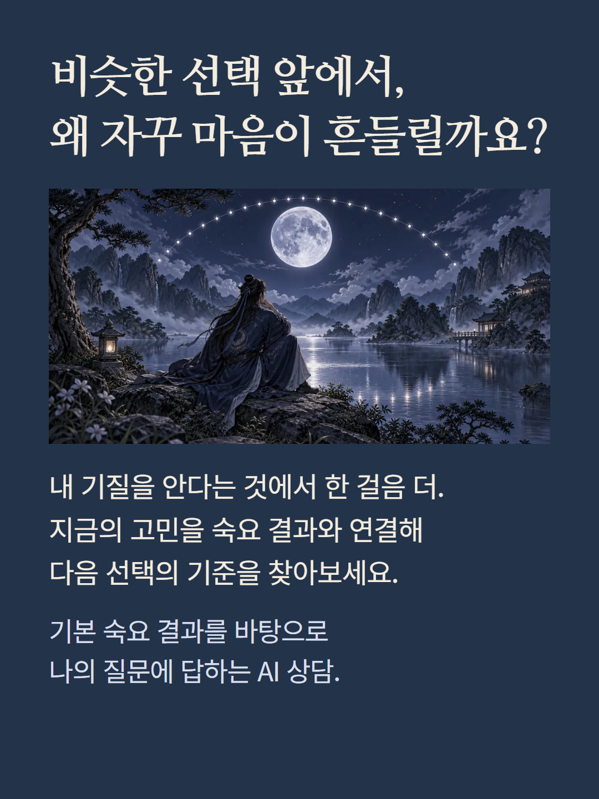
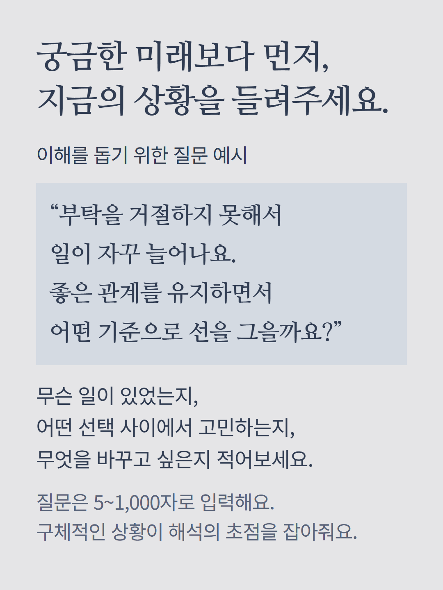
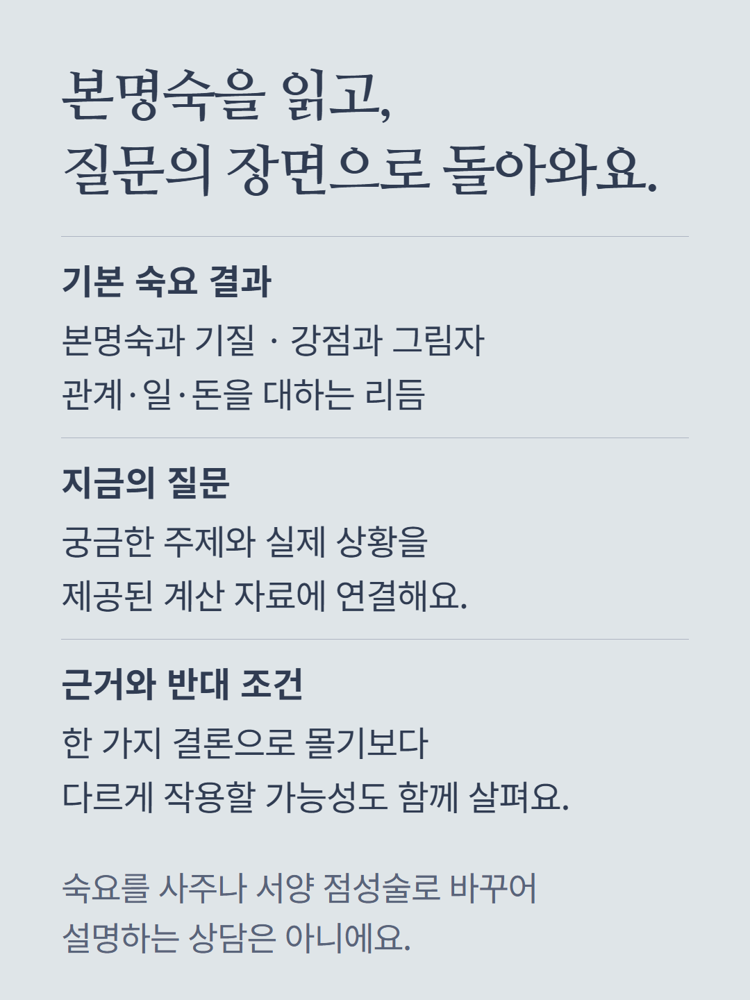
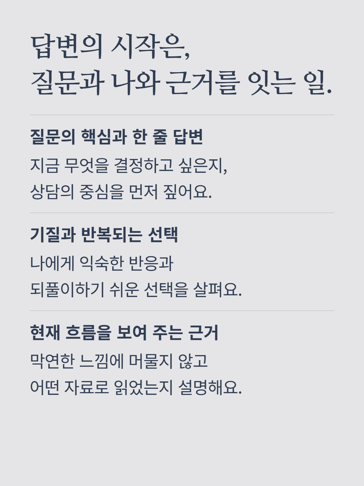
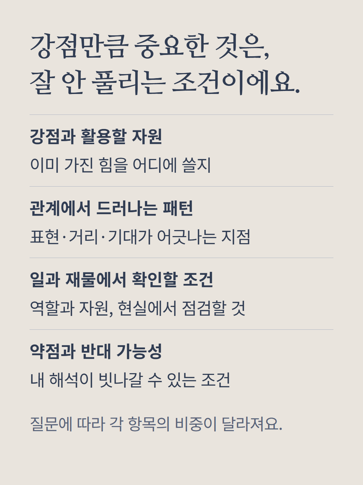
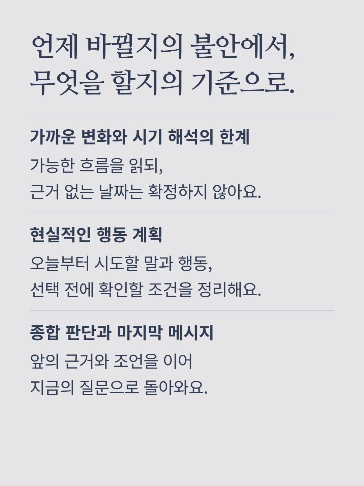
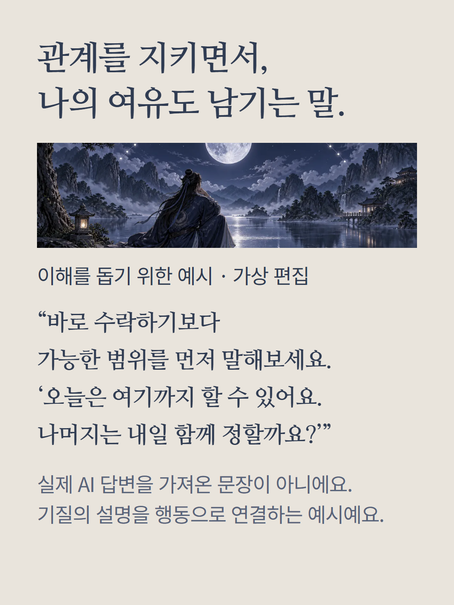
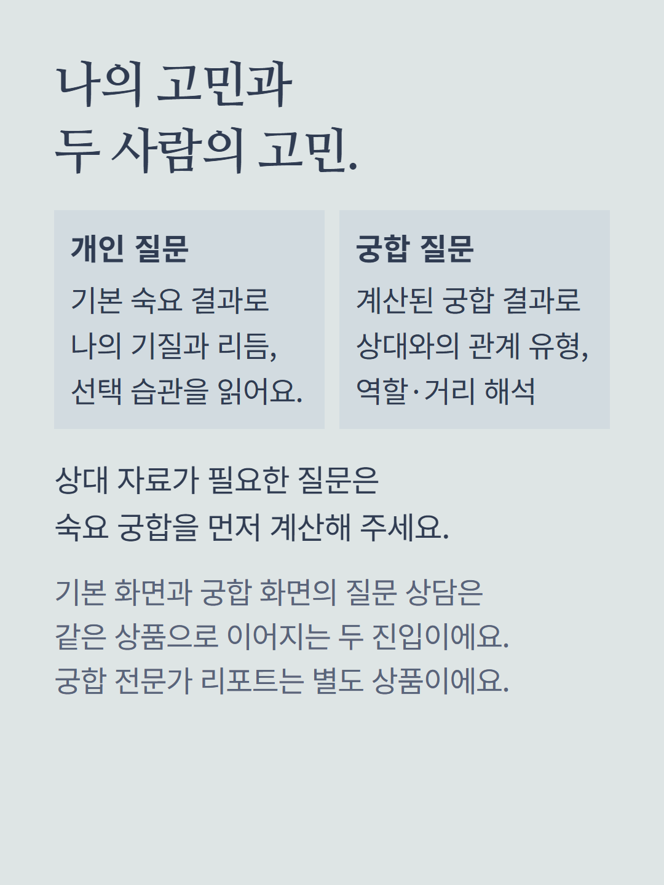
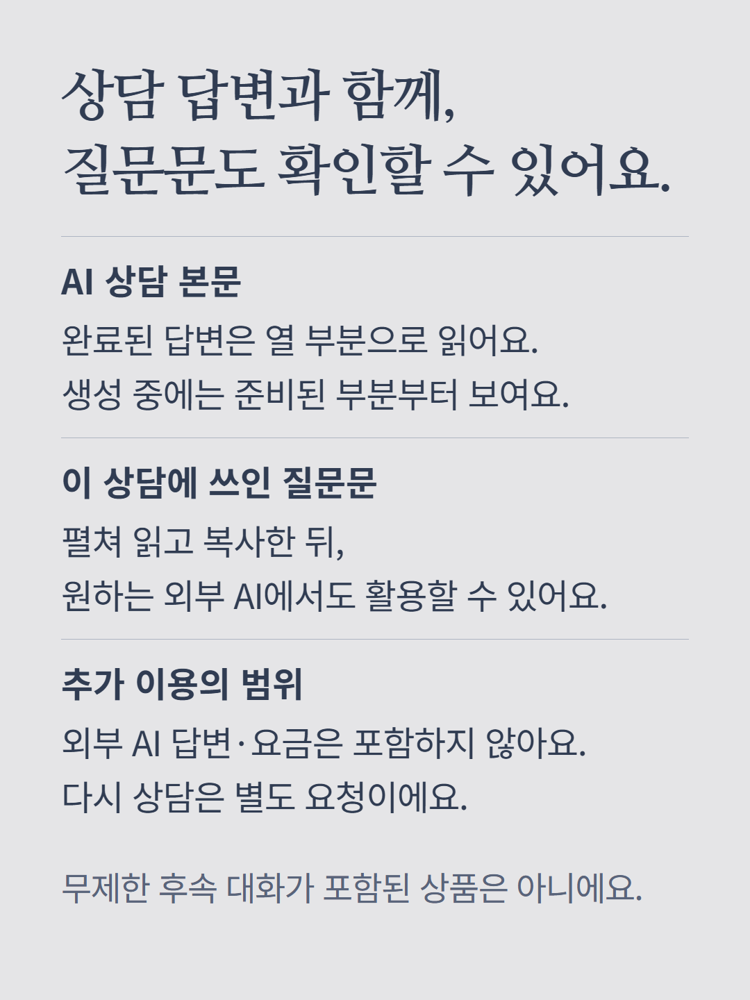
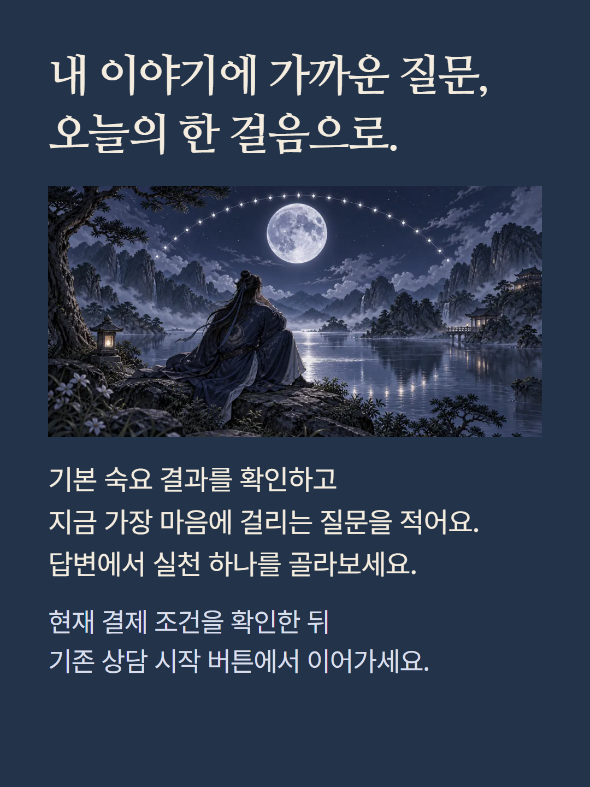

기본 숙요 결과와 입력한 질문을 바탕으로 AI가 해설하는 질문 상담입니다. 기본 숙요 화면과 궁합 결과의 질문 상담은 같은 상품의 진입 경로입니다. 궁합을 다루는 질문에는 계산된 상대 궁합 결과가 필요하며, 개인 질문은 본인의 기질과 리듬을 중심으로 다룹니다. 완료된 답변은 질문의 핵심, 기질, 근거, 강점, 관계 패턴, 일과 재물의 조건, 약점과 반대 가능성, 변화와 시기 해석의 한계, 행동 계획, 종합 판단의 열 부분으로 구성됩니다. 생성 진행 중에는 완성된 부분부터 표시될 수 있으며, 질문과 제공된 자료에 따라 각 부분의 내용과 비중이 달라집니다. 계산 자료에 없는 날짜나 상대의 마음을 확정하는 서비스가 아닙니다. 상담에 사용된 질문문도 함께 확인하고 복사할 수 있으나 외부 AI의 답변·이용 요금은 포함하지 않습니다. 다시 상담은 별도 요청이며 무제한 후속 대화를 뜻하지 않습니다. 궁합 전문가 상담, 인연 레이더, 도감·연간 운세는 별도 상품입니다. 예시는 이해를 돕기 위한 가상 편집이며 실제 AI 응답이나 고객 후기가 아닙니다. 건강은 자기 돌봄, 재물은 선택 조건을 살피는 참고입니다. 현재 결제 조건을 확인해 주세요.